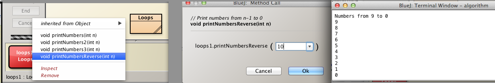
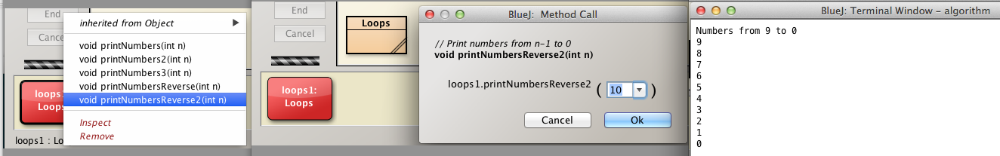
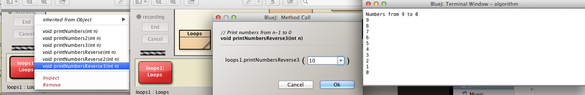
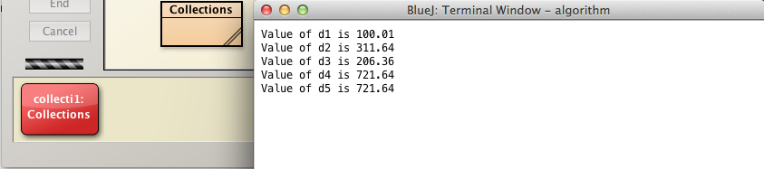
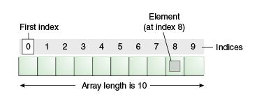
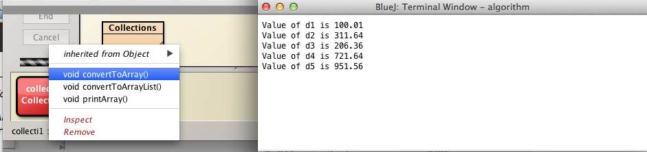
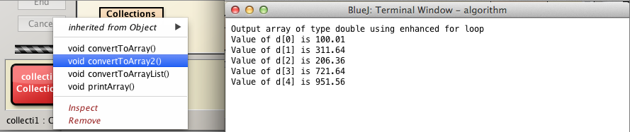
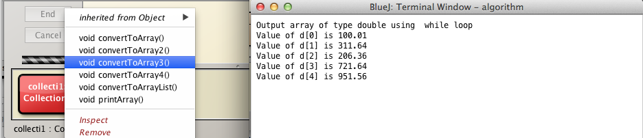
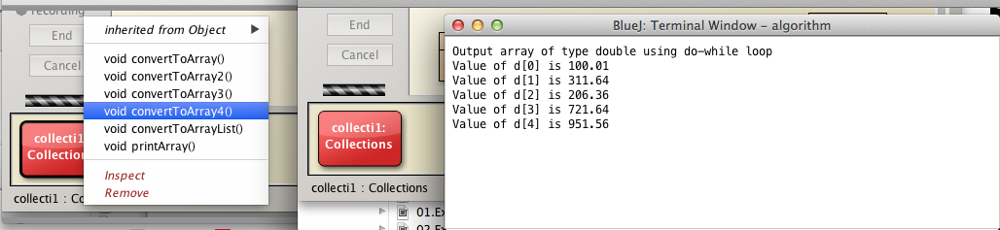

These are the solutions to the first seven exercises set in the session Grouping Objects and relating to
Write a method named printNumbersReverse that prints the numbers between 0 and n-1 inclusive in descending (reverse) order.
Use as a model the existing method printNumbers in Loops class.
Use a for loop.
Here is the method signature:
Here is the existing printNumbers method:
/**
* Print numbers from 0 to n-1 using for loop
* @param n the terminating value
*/
public void printNumbers(int n)
{
System.out.println("Numbers from 1 to " + n);
for(int i = 0; i < n; i += 1)
{
System.out.println(i);
}
}In the method above, the for loop commences at i = 0 and proceeds in increments of 1 through successive loops until the terminating value is reached, namely n-1.
At each iteration the value of i is printed.
In this exercise we simply reverse the process so that
Here is the code:
/**
* Print numbers from n-1 to 0
*/
public void printNumbersReverse(int n)
{
System.out.println("Numbers from " + (n-1) + " to 0");
for(int i = n-1; i >= 0; i -= 1)
{
System.out.println(i);
}
}The minimum value of n for which the method produces meaningful resuls is 1.

Write a method named printNumbersReverse2 that prints the numbers between 0 and n-1 inclusive in descending (reverse) order.
Use as a model the existing method printNumbers2.
Use a while loop.
Here is the method signature:
Here is the code to print the numbers n-1 to 0 in descending order using a while loop:
/**
* Print numbers from n-1 to 0
*/
public void printNumbersReverse2(int n)
{
System.out.println("Numbers from " + (n-1) + " to 0");
int i = n-1;
while(i >= 0)
{
System.out.println(i);
i -= 1;
}
}
}The program declares and initializes a loop counter:
Then the expression i >= 0 is evaluated.
The minimum value of n for which the method produces meaningful resuls is 1.

Write a method named printNumbersReverse3 that prints the numbers between 0 and n-1 inclusive in descending (reverse) order.
Use as a model the existing method printNumbers3.
Use a do-while loop.
Here is the method signature:
Here is the code to print numbers in reverse order from n-1 to 0 using a do-while loop.
/**
* Print numbers from n-1 to 0
*/
public void printNumbersReverse3(int n)
{
System.out.println("Numbers from " + (n-1) + " to 0");
int i = n-1;
do
{
System.out.println(i);
i -= 1;
}while(i >= 0);
}The minimum value of n for which the method produces meaningful resuls is 1.

Add a method to the Collection class named convertToArray.
Here is the initial method. Add this to the Collection class.
public void convertToArray()
{
double d1 = 100.01;
double d2 = 311.64;
double d3 = 206.36;
double d4 = 721.64;
double d5 = 951.56;
System.out.println("Value of d1 is " + d1);
System.out.println("Value of d2 is " + d2);
System.out.println("Value of d3 is " + d3);
System.out.println("Value of d4 is " + d4);
System.out.println("Value of d5 is " + d5);
}
The exercise comprises the following:
Here is the refactored method:
public void convertToArray()
{
int size = 5;
double[] d = new double[size];
d[0] = 100.01;
d[1] = 311.64;
d[2] = 206.36;
d[3] = 721.64;
d[4] = 951.56;
System.out.println("Value of d1 is " + d[0]);
System.out.println("Value of d2 is " + d[1]);
System.out.println("Value of d3 is " + d[2]);
System.out.println("Value of d4 is " + d[3]);
System.out.println("Value of d5 is " + d[4]);
}We have created an array of type double.


A more compact solution pair is provided here, in one of which cases we use double literals.
// Using double array objects
public static void convertToArray()
{
double[] data = new double[] {100.01, 311.64, 206.36, 721.64, 951.56};
for (int i = 0; i < data.length; i += 1)
{
System.out.println("Value of d" + i + " is " + data[i]);
}
} // Using double literals
public static void convertToArray2()
{
double[] data = {100.01, 311.64, 206.36, 721.64, 951.56};
for (int i = 0; i < data.length; i += 1)
{
System.out.println("Value of d" + i + " is " + data[i]);
}
}Repeat exercise 4 but using a for-each loop to display the values.
Here is the refactored method using a for-each loop to print the array:
public void convertToArray2()
{
int size = 5;
double[] d = new double[size];
d[0] = 100.01;
d[1] = 311.64;
d[2] = 206.36;
d[3] = 721.64;
d[4] = 951.56;
int i = 0;
for(double element : d)
{
System.out.println("Value of d[" + i + "] is " + element);
i += 1;
}
}Notice that we have been obliged to introduce a loop counter so as to distinguish between each element in the printed label preceeding each output value, example:
Value of d[1] is 100.41
Value of d[2] is 311.64

Repeat exercise 4 but using a while loop to display the values.
Here is the method convertToArray4() in which a while loop is used to print the contents of the array of type double:
public void convertToArray3()
{
int size = 5;
double[] d = new double[size];
d[0] = 100.01;
d[1] = 311.64;
d[2] = 206.36;
d[3] = 721.64;
d[4] = 951.56;
System.out.println("Output array of type double using while loop");
int i = 0;
while(i < d.length)
{
System.out.println("Value of d[" + i + "] is " + d[i]);
i += 1;
}
}
Repeat exercise 4 but using a do-while loop to display the values.
Here is the method convertToArray4() in which a do-while loop is used to print the contents of the array of type double:
public void convertToArray4()
{
int size = 5;
double[] d = new double[size];
d[0] = 100.01;
d[1] = 311.64;
d[2] = 206.36;
d[3] = 721.64;
d[4] = 951.56;
System.out.println("Output array of type double using do-while loop");
int i = 0;
do
{
System.out.println("Value of d[" + i + "] is " + d[i]);
i += 1;
}while(i < d.length);
}